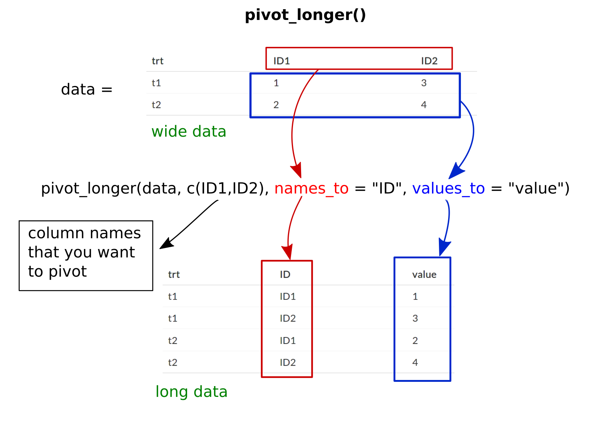
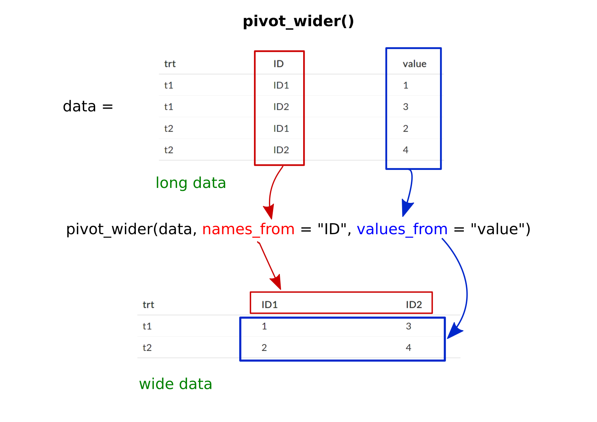

Learn how to make your data tidy with the tidyr package.
Raw data might not be always in a usable form for any form of analysis or visualization process. The tidyr package aims to help you in reshaping your data in a usable form. In short, it helps you to ‘tidy’ up your data using various tools. In this chapter, we will see how you can use the tidyr package to make your data tidy.
First, we need to understand what tidy data looks like. For that let us imagine a scenario where you are a doctor who is trying to find the best treatment for a disease. Now your colleagues have short-listed five different treatment methods and have reported their efficacy values when tested with five different patients. Now you are tasked with finding which of the five treatments is the best against the disease. You open your computer and you find the following data of the experiment.
This is how often data is stored because it is easy to write it this way. In the first column, you can see the different treatments from one to five. And in the second column, you have the efficacy values of the treatments for patient 1 and it goes on for the other patients. Now, this is a good example of how a dataset should not look like! Surprised? Let us see what makes this dataset ‘dirty’.
You can quickly notice that there is no mentioning of what these numerical values mean. Of course, we know that they are efficacy values for the different treatments. But for someone who only has this data as a reference, that person would not have a clue as to what these numbers mean. Also, note that each of the rows contains multiple observation values which is not a feature of tidy data. This kind of data format is called ‘wide data’ which we will talk more about later.
With that being said, tidy data will have;
So let us see how the ‘tidier’ version of this data would look like.
You can see each of the columns represent only one type of variable. In the first column, you have the types of treatments, followed by patient IDs and their efficacy values for each treatment. Also, note that each row represents only one observation. So this kind of data format is what we strive to achieve by using the tidyr package and they are called as ‘long data’. So let us begin!
There are different sets of commands which you can utilize to reshape your data and make it tidy. Let us each of these commands in action. But first, make sure you have the tidyr package loaded.
#load tidyr package
library(tidyr)The pivot_longer() command converts a ‘wide data’ to a ‘long data’. It does so by converting row names to a new column under a new variable name with its corresponding values moved into another column with another variable name. So let us see how it goes. We will take the earlier mentioned example and will see how to make it tidy. Now you don’t have to be concerned with the codes I have used to make the dummy data. Just have your focus on the pivot_longer() syntax.
#making a dummy data
#using sample function to pick random numbers in a sequence
patient1 <- c(seq(1,5,1))
patient2 <- c(seq(6,10,1))
patient3 <- c(seq(11,15,1))
patient4 <- c(seq(16,20,1))
patient5 <- c(seq(21,25,1))
#cbind simple combines the columns of same size
treatment_data <- cbind(patient1,patient2,patient3,patient4,patient5)
trt <- c("treatment1", "treatment2","treatment3","treatment4","treatment5")
trt_data <- cbind(trt, treatment_data)
trt_data <- as.data.frame(trt_data) #making it a data frame
trt_data_tidy <- pivot_longer(trt_data,
c(patient1,patient2,patient3,patient4,patient5),
names_to = "patient_ID", values_to = "efficacy")
trt_data_tidyFurthermore, you don’t have to manually type in the column names as you can use colnames() to call the column names of the dataset. Another way of doing the same is by excluding the first column from the process. By doing so the command will automatically pivot all columns except the excluded ones, so in this way, we don’t need to manually specify the column names. The codes given below will give you the same result as before.
patient1 <- c(seq(1,5,1))
patient2 <- c(seq(6,10,1))
patient3 <- c(seq(11,15,1))
patient4 <- c(seq(16,20,1))
patient5 <- c(seq(21,25,1))
treatment_data <- cbind(patient1,patient2,patient3,patient4,patient5)
treatment <- c("treatment1", "treatment2","treatment3","treatment4","treatment5")
trt_data <- cbind(treatment, treatment_data)
trt_data <- as.data.frame(trt_data)
#using colnames, [-1] is included to exclude the name of first column from the process
trt_data_tidy1 <- pivot_longer(trt_data,
colnames(trt_data)[-1],
names_to = "patient_ID", values_to = "efficacy")
#the same can be done by manually specifying which columns to exclude
#this can be done by denoting the column name ('treatment' in this case) with '-' sign
trt_data_tidy2 <- pivot_longer(trt_data, names_to = "patient_ID",
values_to = "efficacy", -treatment)
#checking if both the tidy datasets are one and the same
paged_table(as.data.frame(trt_data_tidy1 == trt_data_tidy2),
options = list(rows.print = 5))The syntax for pivot_longer() is given below with description
pivot_longer("data", c("colname1, colname2,....."),
names_to = "name of the column where your row names are present",
values_to = "name of the column where your corresponding row values are present")Here is a graphical representation

The pivot_wider() does the exact opposite of what pivot_longer() does, which is to convert long data into wide data. We will use the earlier example.
#making a dummy data
#using sample function to pick random numbers in a sequence
patient1 <- c(seq(1,5,1))
patient2 <- c(seq(6,10,1))
patient3 <- c(seq(11,15,1))
patient4 <- c(seq(16,20,1))
patient5 <- c(seq(21,25,1))
#cbind simple combines the columns of same size
treatment_data <- cbind(patient1,patient2,patient3,patient4,patient5)
trt <- c("treatment1", "treatment2","treatment3","treatment4","treatment5")
trt_data <- cbind(trt, treatment_data)
trt_data <- as.data.frame(trt_data) #making it a data frame
trt_data_tidy <- pivot_longer(trt_data,
c(patient1,patient2,patient3,patient4,patient5),
names_to = "patient_ID", values_to = "efficacy")
#making the data wide
trt_data_wider <- pivot_wider(trt_data_tidy, names_from = "patient_ID",
values_from = "efficacy")
#paged_Table() for viewing the dataset as a table,
#you can see that the dataset is same as before
paged_table(as.data.frame(trt_data_wider))The syntax for pivot_wider() is given below with description
pivot_longer("data",
names_from = "name of the column which contains your wide data columns",
values_from = "name of the column where your corresponding wide data column values are")Here is a graphical representation

There can be an instance where you want to split or untie cells within your dataset. Let us look at some examples.
In the data given below, let say we want to unite the century column and the year column together. This can be done using the unite() command. You can view the before and after instances in the tabs below
event <- c(letters[1:4])
century <- c(rep(19:20, each = 2))
year <- c(seq(10,16,2))
data <- as.data.frame(cbind(event,century,year))
paged_table(data)#dummy data
event <- c(letters[1:4])
century <- c(rep(19:20, each = 2))
year <- c(seq(10,16,2))
data <- as.data.frame(cbind(event,century,year))
#uniting columns century and year
data_new <- unite(data, century, year, col = "event_year", sep = "")
#viewing data as a table
paged_table(data_new)The syntax of unite() is as follows.
unite("dataset name",
"name of first column to unite, name of second column to unite,.......",
col = "name of the new column to which all the other column will unite together",
sep = "input any element as a separator between the joining column values")
#in this case we are not putting a sep valueIn the data given below, let say we want to split the ‘area_perimeter’ column into two separate columns. This can be done using the separate() command. You can view the before and after instances in the tabs below. As always I will be making dummy data to work with.
#dummy data
shapes <- c(letters[1:4])
area <- c(paste0(10:13, "m^2"))
perimetre <- c(paste0(30:33, "m"))
ratio <-as.data.frame(cbind(shapes,area,perimetre))
data <- unite(ratio, area, perimetre, col = "area_perimetre", sep = "_")
#viewing data as a table
paged_table(data)#dummy data
shapes <- c(letters[1:4])
area <- c(paste0(10:13, "m^2"))
perimetre <- c(paste0(30:33, "m"))
ratio <-as.data.frame(cbind(shapes,area,perimetre))
data <- unite(ratio, area, perimetre, col = "area_perimetre", sep = "_")
#separating column values into two separate columns named area and perimeter respectively
data_new <- separate(data, area_perimetre, sep = "_",
into = c("area", "perimetre"))
#viewing data as a table
paged_table(data_new)The syntax of separate() is as follows.
separate("data name",
"column to separate into",
sep = "the separator element",
into = c("col1", "col2", "........")) # column names for the separated valuesSimilar to the above case, you can also separate column values into several rows.
#dummy data
shapes <- c(letters[1:4])
area <- c(paste0(10:13, "m^2"))
perimetre <- c(paste0(30:33, "m"))
ratio <-as.data.frame(cbind(shapes,area,perimetre))
data <- unite(ratio, area, perimetre, col = "area_perimetre", sep = "_")
#viewing data as a table
paged_table(data)#dummy data
shapes <- c(letters[1:4])
area <- c(paste0(10:13, "m^2"))
perimetre <- c(paste0(30:33, "m"))
ratio <-as.data.frame(cbind(shapes,area,perimetre))
data <- unite(ratio, area, perimetre, col = "area_perimetre", sep = "_")
#separating column values into two several rows
data_new <- separate_rows(data, area_perimetre, sep = "_")
#viewing data as a table
paged_table(data_new)The syntax of separate_rows() is as follows.
separate_rows("data name",
"column to separate",
sep = "the separator element")You can expand your data to include all possible combinations of values of variables listed or complete the dataset with NA values for all possible combinations.
Using the expand() command we can expand our data with missing combinations for the variables we specify.
#dummy data
brand <- c(letters[1:4])
dress <- c("shirt", "pant", "jeans", "trousers")
size <- c("s", "m", "l", "xl")
dress_data <- as.data.frame(cbind(brand,dress,size))
#viewing data as a table
paged_table(dress_data)#dummy data
brand <- c(letters[1:4])
dress <- c("shirt", "pant", "jeans", "trousers")
size <- c("s", "m", "l", "xl")
dress_data <- as.data.frame(cbind(brand,dress,size))
#expanding dataset with brand and dress as variables
dress_data_expand <- expand(dress_data, brand, dress)
#viewing data as a table
paged_table(dress_data_expand)The syntax of expand() is as follows.
expand("data name", "column names which you want to expand separated by commas")The complete() command functions similar to the expand() command, but it also fills in NA values for columns which we didn’t specify, The main reason to use this command would be to convert implicit NA values hidden in the dataset to explicit NA values which are expressed in the dataset. Given below is a comparison between the complete() and expand() commands.
#dummy data
brand <- c(letters[1:4])
dress <- c("shirt", "pant", "jeans", "trousers")
size <- c("s", "m", "l", "xl")
dress_data <- as.data.frame(cbind(brand,dress,size))
#expanding dataset with brand and dress as variables
dress_data_expand <- expand(dress_data, brand, dress)
#viewing data as a table
paged_table(dress_data_expand)#dummy data
brand <- c(letters[1:4])
dress <- c("shirt", "pant", "jeans", "trousers")
size <- c("s", "m", "l", "xl")
dress_data <- as.data.frame(cbind(brand,dress,size))
#completing dataset with brand and dress as variables
#the variable 'size' will be filled with NAs as we did not specify it
dress_data_complete <- complete(dress_data,brand,dress)
#viewing data as a table
paged_table(dress_data_complete)The syntax of complete() is as follows.
complete("data name", "column names which you want to complete separated by commas")Most data collection would often result in possible NA values. The tidyr package allows us to drop or convert NA values. We will resue the earlier example. Below tabs show before and removing NA values.
Use drop_na() to remove NA value containing rows from the dataset.
#dummy data
brand <- c(letters[1:4])
dress <- c("shirt", "pant", "jeans", "trousers")
size <- c("s", "m", "l", "xl")
dress_data <- as.data.frame(cbind(brand,dress,size))
dress_data_complete <- complete(dress_data,brand,dress)
#viewing data as a table
paged_table(dress_data_complete)#dummy data
brand <- c(letters[1:4])
dress <- c("shirt", "pant", "jeans", "trousers")
size <- c("s", "m", "l", "xl")
dress_data <- as.data.frame(cbind(brand,dress,size))
dress_data_complete <- complete(dress_data,brand,dress)
#dropping NA values
dress_data_noNA <- drop_na(dress_data_complete)
#viewing data as a table
paged_table(dress_data_noNA)Use fill() to replace NA values by taking values from nearby cells. By default the NA values as replaced by whatever value that is above the cell containing the NA value. This can be changed by specifying the .direction value within fill()
#dummy data
brand <- c(letters[1:4])
dress <- c("shirt", "pant", "jeans", "trousers")
size <- c("s", "m", "l", "xl")
dress_data <- as.data.frame(cbind(brand,dress,size))
dress_data_complete <- complete(dress_data,brand,dress)
#direction 'downup' simultaneously fill both upwards and downwards NA containing cells
dress_data_fill <- fill(dress_data_complete, size, .direction = "downup")
##viewing data as a table
paged_table(dress_data_fill)Use replace_na() command to replace NA values to whatever value specified.
#dummy data
brand <- c(letters[1:4])
dress <- c("shirt", "pant", "jeans", "trousers")
size <- c("s", "m", "l", "xl")
dress_data <- as.data.frame(cbind(brand,dress,size))
dress_data_complete <- complete(dress_data,brand,dress)
#replace NA with 0
#specify the column which have NA inside the list()
#then equate the value which would replace NAs
dress_data_zero <- replace_na(dress_data_complete, list(size = 0))
##viewing data as a table
paged_table(dress_data_zero)So in this chapter, we learned what is tidy data and how we can make our data into tidy data. Making our data tidy is very important as it helps us to analyse and visualise the data in a very efficient manner. We also learned how to reshape our data, how to split or unite cells, how to complete and expand data and how to handle NA values. Hope this chapter was fruitful for you!